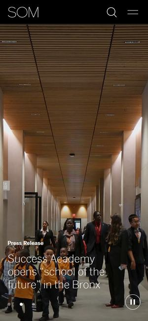

먼저 보세요01SOM
와 포인트첫 화면이 건물 사진 한 장으로 꽉 차고, 사진 아래 한 줄은 ‘올해의 초고층 건물로 선정’ 같은 소식입니다. 사진이 넘어갈 때마다 다른 프로젝트와 다른 소식이 붙고, 조금 내리면 ‘혁신 90년’이라는 한 줄이 나옵니다.
어니스트패밀리라면첫 화면을 123타이어·플라워119·스테이엔조이 실제 화면으로 꽉 채우고, 아래 한 줄에 ‘6개월 단위 세 번째 재계약’, ‘배송사진 23만 건을 옮긴 리뉴얼’ 같은 사실을 붙입니다.